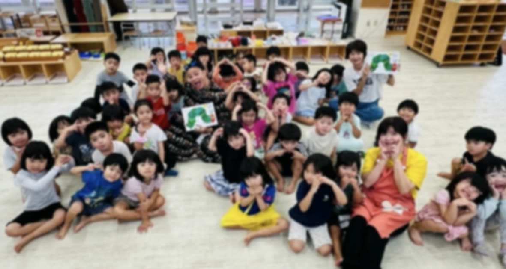
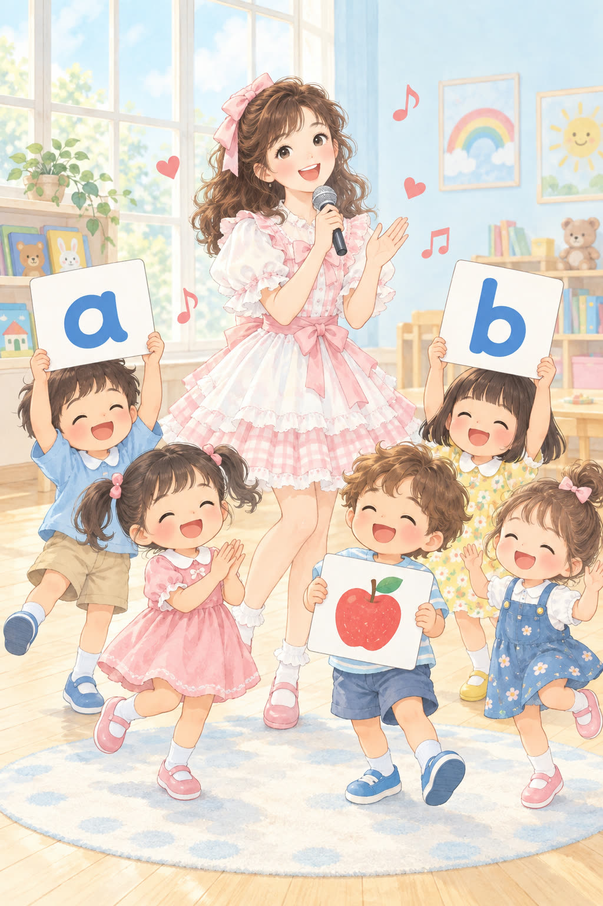

Why
英語を、きらいにさせない。
-
はじめた理由
わたしも、英語がきらいでした
わたしは中学2年で英語がきらいになりました。だからこそ、同じ思いをする子をつくりたくないのです。
根っこにあるのは、「英語難民」をつくりたくない、という気持ちです。
-
教室の進め方
遊びながら、音から入る
遊びながら音から入って、いつのまにか読めるようになる進め方です。外国の教材やカード遊びから始め、読み書き、そして英検の対策へつなげます。
ご家庭でのレッスンと、園でのレッスンをしています。
-

受け入れ先を募集中
園・学童のみなさまへ
訪問英語教室保育園・幼稚園・学童クラブへうかがって、英語の時間をつくっています。受け入れてくださる園・学童を募集しています。
はじまりと終わりは、80年代アイドルの歌。紫あゆなが歌い、子どもたちが踊ります。あいだは、音から入るフォニックスで、動物やものの名前、数を、遊びながら口にできるようにしていきます。
回数・時間・費用は、園のご事情をうかがってからご案内します。「話だけ聞いてみたい」という段階でも、どうぞお気軽に。これから、学校訪問も広げていきたいと思っています。
Apply
お申し込み・ご相談
ご家庭の方も、園・学童の方も、こちらからどうぞ。
あゆなの日々の発信は、Instagram と Facebook からどうぞ。